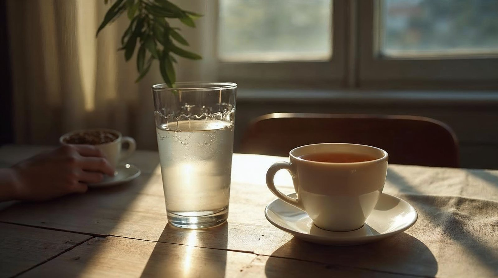
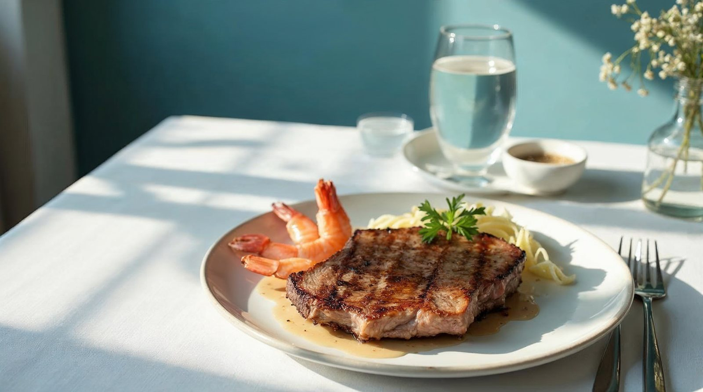
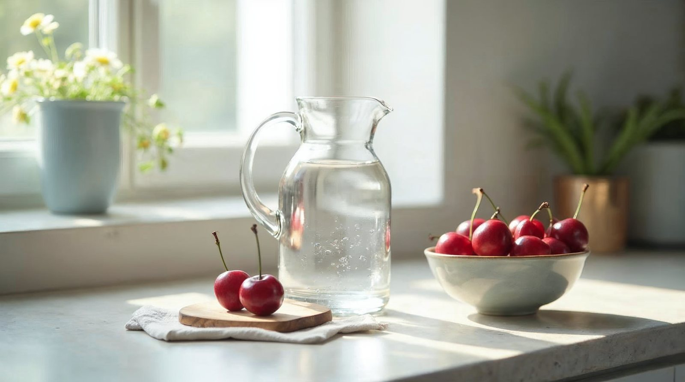
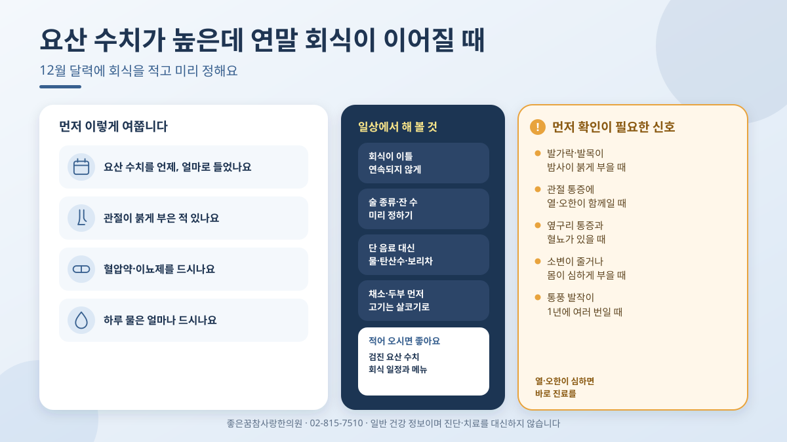

이종호 한의사 감수좋은꿈참사랑한의원 대표원장 (한의사 면허번호 19769)발행 2026-11-27 · 수정 2026-11-27
이 글의 차례
건강검진에서 요산 수치가 높은 편이라는 말을 들었는데 12월 달력에 회식과 송년회가 빼곡하다면, '고기도 맥주도 안 된다는데 어떻게 하나' 싶어 막막해지시죠. 그 마음 충분히 이해해요.
요산은 몸속 퓨린이라는 물질이 분해되며 생기는 찌꺼기예요. 수치가 높은 상태가 오래 이어지면 관절에 결정이 쌓여 통풍 발작으로 이어질 수 있어요.
연말엔 고기와 내장류, 굴·조개 같은 해산물, 맥주와 소주, 과당이 든 달달한 음료가 한꺼번에 겹쳐요. 추위에 물은 덜 마시게 되고요. 요산이 오르기 쉬운 조건이 다 갖춰지는 거예요.
그래서 저는 둘을 나눠서 말씀드려요. '회식을 피하는 것'과 '회식 자리에서 덜 무리하는 것'은 다른 얘기예요. 다 피하기는 어려우니, 술은 종류와 잔 수를 미리 정하고, 안주는 내장류와 진한 국물을 줄이고, 물을 술잔 사이사이 마시고, 다음 날 회복 식사를 정해 두는 방식이 현실적이에요.
이미 요산 약을 드시는 분은 회식이 있어도 약을 임의로 거르지 않습니다. 엄지발가락, 발등, 발목, 무릎이 밤사이 갑자기 붉게 붓고 이불만 스쳐도 아플 정도라면 참지 말고 진료를 먼저 받으세요.
왜 연말 회식은 요산 수치에 부담이 될까요
- 소고기·돼지고기 같은 붉은 고기, 곱창·막창·간·순대 같은 내장류, 멸치·정어리 같은 작은 생선, 굴·조개·새우 같은 해산물에는 퓨린이 많은 편입니다. 연말 회식 메뉴의 상당수가 여기에 해당합니다.
- 고기와 해산물을 오래 끓인 국물, 전골, 탕에는 퓨린이 국물로 우러나와 있어 건더기보다 국물을 많이 먹을 때 부담이 커질 수 있습니다.
- 술은 종류와 상관없이 몸에서 요산을 만드는 과정을 늘리고 콩팥으로 내보내는 것을 방해할 수 있습니다. 맥주는 그 자체에 퓨린도 들어 있어 더 주의하라는 안내를 많이 받습니다.
- 콜라, 사이다, 과일 주스, 하이볼에 들어가는 시럽처럼 과당이 많은 음료도 요산을 높이는 쪽으로 작용할 수 있습니다. 술을 안 마신다고 단 음료를 계속 마시면 비슷한 부담이 생깁니다.
- 겨울에는 갈증을 덜 느껴 물을 적게 마십니다. 몸에 수분이 부족하면 요산이 소변으로 덜 나가고, 술은 소변을 늘려 탈수를 부추깁니다.
- 하루 종일 굶었다가 밤에 몰아 먹거나, 연말 전에 살을 빼겠다며 갑자기 굶는 것도 일시적으로 요산을 올릴 수 있습니다.
- 발끝은 몸에서 체온이 낮은 곳이라 요산 결정이 생기기 쉬운 곳으로 알려져 있습니다. 추운 날 얇은 구두로 오래 서 있거나 발이 차가운 채로 지내는 것도 신경 쓸 부분입니다.
- 한의학에서는 기름지고 단 음식과 술을 즐기며 덜 움직일 때 몸에 습열이 쌓여 관절이 붓고 화끈거리는 모습으로 드러난다고 보기도 하며, 관절이 붓고 몹시 아픈 모습을 오래전부터 역절풍(歷節風)이나 통풍(痛風) 같은 이름으로 기록해 왔습니다.
먼저 이렇게 여쭙니다
- 언제 받은 검진에서 요산 수치가 얼마라고 들었는지, 이전 해와 비교해 어떻게 달라졌는지 여쭙니다.
- 관절이 갑자기 붉게 붓고 아팠던 적이 있는지, 있다면 어느 관절이었고 얼마나 이어졌는지 여쭙니다.
- 요산을 낮추는 약이나 혈압약, 이뇨제, 아스피린처럼 요산과 관련될 수 있는 약을 드시는지 여쭙니다.
- 12월 회식과 모임이 몇 번쯤 잡혀 있는지, 주로 어떤 메뉴와 술인지 여쭙니다.
- 하루에 마시는 물의 양과 소변 색, 단 음료를 얼마나 드시는지 여쭙니다.
- 체중과 허리둘레, 혈압, 혈당, 중성지방 같은 다른 검진 수치도 함께 여쭙니다. 요산이 높은 분은 이런 수치가 같이 오르는 경우가 많습니다.
- 콩팥 기능이나 요로결석에 대해 들은 적이 있는지 여쭙니다.
- 가족 중 통풍을 앓은 분이 있는지도 여쭙니다.

일상에서 먼저 해 볼 수 있는 것
12월 달력에 회식 표시하고 미리 정하기
- 달력에 회식과 모임 날짜를 모두 적고, 그중 꼭 가야 하는 자리와 일찍 나올 수 있는 자리를 나눕니다.
- 회식이 이틀 연속으로 이어지지 않게 조정할 수 있는 자리는 미리 조정합니다. 연달아 마시는 날이 이어질수록 부담이 쌓이기 쉽습니다.
- 회식 날마다 '술은 무엇으로 몇 잔까지', '2차는 가지 않거나 음료로'를 미리 정해 휴대폰 메모에 적어 둡니다.
회식 자리에서
- 맥주를 기본으로 시작하는 습관이 있다면 잔 수를 먼저 정하고 천천히 마십니다. 어떤 술이든 많이 마시면 부담이 되니 종류보다 잔 수를 먼저 줄이고, 술잔 하나에 물 한 컵을 짝지어 둡니다.
- 술 대신 마실 것을 고를 때는 콜라나 사이다, 주스보다 물, 탄산수, 따뜻한 보리차를 고릅니다.
- 고깃집에서는 상추, 깻잎, 버섯, 양파, 두부를 먼저 넉넉히 먹고, 고기는 살코기 위주로 양을 정합니다. 곱창, 막창, 간, 천엽 같은 내장류는 한두 점으로 그칩니다.
- 횟집이나 조개구이, 굴보쌈 자리에서는 흰살생선회를 고르고, 굴·조개·새우를 한꺼번에 많이 먹지 않습니다. 매운탕이나 조개탕은 건더기 위주로 먹고 국물은 몇 숟가락에서 멈춥니다.
- 전골이나 샤부샤부 자리에서는 오래 끓인 국물에 밥을 볶거나 칼국수 사리를 넣어 마무리하는 것을 쉬어 갑니다.
물과 소변 챙기기
- 회식이 있는 날은 낮 동안 물을 평소보다 조금 더 나눠 마십니다. 하루 1.5~2L 안팎을 목표로 하되, 심장이나 콩팥 질환으로 물 양을 제한받은 분은 그 안내를 먼저 따릅니다.
- 집에 돌아와 잠들기 전에 물 한 컵, 다음 날 아침 일어나서 물 한 컵을 마십니다.
- 소변 색이 진한 노란색이면 물이 부족하다는 신호로 보고 조금 더 마십니다.
다음 날 회복과 평소 생활
- 회식 다음 날은 아침을 거르지 않고, 점심과 저녁은 채소와 잡곡밥, 달걀, 두부, 저지방 우유나 요구르트 위주로 담백하게 먹습니다.
- 해장으로 내장탕, 순댓국, 진한 사골 국물을 매번 찾는 습관이 있다면 콩나물국이나 북엇국 건더기 위주로 바꿔 봅니다.
- 체중을 줄여야 한다면 굶기보다 한 달에 1~2kg 안팎의 느린 속도를 목표로 잡습니다. 급하게 굶으면 오히려 요산이 일시적으로 오를 수 있습니다.
- 추운 날에도 하루 30분 걷기를 이어 가되, 관절이 붓고 아픈 날에는 무리해서 걷지 않고 쉬는 것이 먼저입니다.
- 발이 차지 않게 두꺼운 양말을 신고, 발을 조이는 구두로 오래 서 있어야 하는 자리에는 편한 신발을 챙겨 갑니다.

상황별 예시
- 예를 들어 검진에서 요산 수치가 높은 편이라는 말을 들었지만 아직 통풍 발작은 없었던 40대 직장인이, 12월에 삼겹살·곱창 회식과 조개구이 송년회가 연달아 잡힌 경우, 이틀 연속 회식 가운데 하나를 미루고 회식마다 맥주 잔 수와 2차 여부를 미리 정합니다. 내장류는 한두 점, 국물은 몇 숟가락으로 그치고, 술잔마다 물 한 컵을 짝지어 마셔 봅니다.
- 예를 들어 작년 겨울 엄지발가락이 붓고 아팠던 적이 있어 요산 약을 처방받아 먹다가, 회식이 있는 날에는 술과 함께 먹으면 안 될 것 같아 약을 건너뛰는 경우, 임의로 거르지 말고 처방한 의사에게 회식 날 복용 방법을 물어봅니다. 약을 들쭉날쭉 먹으면 수치가 출렁이며 오히려 발작이 생기는 경우도 있습니다.
- 예를 들어 술은 거의 안 마시는 대신 회식 자리에서 콜라와 사이다를 대여섯 잔씩 마시고, 집에서도 과일 주스와 달달한 커피 음료를 즐기는 경우, 과당이 많은 음료를 물과 탄산수, 보리차로 바꾸는 것부터 해 봅니다.
- 예를 들어 연말 모임 다음 날 아침 엄지발가락 아래가 붉게 부어 화끈거리고 양말을 신기도 힘든 경우에는 생활 조절보다 진료가 먼저입니다. 얼음주머니를 수건에 싸서 대고 다리를 높이 두어 쉬며, 그날 안에 진료를 받습니다.
자주 하는 오해
- 요산 수치가 높으면 곧 통풍이라고 걱정하기 쉽지만, 수치가 높아도 오랫동안 발작이 없는 분도 많습니다. 다만 수치가 높은 상태가 오래 이어질수록 위험이 커질 수 있어 생활과 수치를 함께 지켜봅니다.
- 소주나 위스키는 퓨린이 적으니 괜찮다고 여기기 쉽지만, 술 자체가 요산을 올리는 쪽으로 작용할 수 있어 종류보다 양이 더 중요합니다.
- 고기만 끊으면 된다고 생각하는 분도 있는데, 단 음료와 과당, 체중, 물 부족, 술처럼 함께 살펴야 할 부분이 많습니다.
- 통풍 발작이 가라앉으면 다 끝났다고 여기기 쉽지만, 통증이 사라져도 요산 수치는 그대로일 수 있어 검사와 생활 관리를 이어 갑니다.
- 아픈 관절을 뜨겁게 찜질하면 풀린다고 생각하는 분도 있습니다. 붉게 붓고 열감이 있는 발작기에는 차갑게 식히고 쉬게 하는 쪽을 권합니다.

스스로 점검해 보세요
- 최근 검진에서 요산 수치가 높은 편이라는 말을 들었다.
- 12월에 회식이나 모임이 일주일에 두 번 이상 잡혀 있다.
- 회식 메뉴로 곱창, 내장탕, 조개구이, 진한 탕 국물을 자주 먹는다.
- 술자리에서 맥주를 기본으로 마시거나, 술 대신 단 음료를 여러 잔 마신다.
- 겨울에는 하루 물을 서너 잔도 마시지 않는 날이 많다.
- 체중이나 허리둘레가 작년보다 늘었고 혈압, 중성지방도 함께 올랐다.
- 엄지발가락이나 발목이 갑자기 붓고 아팠던 적이 있다.
한의원에서 함께 살필 수 있는 경우
- 요산 수치가 높은 편이라는 말을 듣고 연말 회식과 식사를 어떻게 조절할지 함께 정리하고 싶은 경우
- 요산과 함께 체중, 허리둘레, 혈압, 중성지방이 같이 올라 생활 전체를 다시 짜고 싶은 경우
- 몸이 무겁고 잘 붓거나, 술 마신 다음 날 손발과 얼굴이 퉁퉁 붓는 느낌이 반복되는 경우
- 통풍 발작은 가라앉았지만 발과 무릎에 묵직한 불편이 남아 있는 경우(내과·정형외과 진료와 함께)
좋은꿈참사랑한의원에서는 첫 방문 때 검진 결과지의 요산과 혈압, 혈당, 중성지방 수치, 통풍 발작 경험, 복용 중인 약을 먼저 여쭙고, 12월 회식 일정과 즐겨 드시는 메뉴, 술, 물, 잠을 차례로 정리합니다. 그다음 맥부터 짚어 보고, 혀와 배를 살펴 몸에 습과 열이 얼마나 쌓여 있는지, 소화와 붓기는 어떤지 확인합니다.
필요하면 인바디 770으로 체지방과 근육량, 체수분을 함께 보고, 당화혈색소 검사기나 혈액 검사기로 함께 볼 수 있는 항목이 있는지 상의합니다. 요산 수치를 원내에서 확인할 수 있는지와 검사 준비는 방문 전 전화로 확인해 주세요. 결과를 바탕으로 회식 날과 다음 날 식사, 물 마시는 시간, 걷기를 함께 정하고, 필요하면 침이나 한약을 상의합니다.
관절이 붉게 붓고 열이 나는 발작기이거나 요산 약 조절이 필요해 보이면 내과나 류마티스내과 진료를 먼저 안내해 드립니다. 다시 오시면 지난번 정한 방법을 회식 자리에서 어떻게 해 보셨는지 이어서 여쭙니다.
얼마나 지켜보고 언제 상담할까요
- 12월 한 달 동안 회식 날 정한 방법을 지켜 보고, 술잔 수와 물 마신 양, 다음 날 몸 상태를 기록합니다.
- 요산 수치는 연말이 지나고 1~3개월 안에 다시 확인해 흐름을 봅니다. 병원에서 따로 정해 준 간격이 있다면 그것을 따릅니다.
- 요산 약을 드시는 분은 회식 일정과 상관없이 처방대로 이어 가고, 궁금한 점은 처방한 의사와 상의합니다.
- 관절이 갑자기 붓고 아프다면 지켜보지 말고 진료를 먼저 받습니다.
이렇게 기록해 오시면 상담이 쉬워집니다
요산은 숫자 하나로만 보면 막막해요. 그런데 같은 시기의 회식 날짜와 술, 물 마신 양을 나란히 놓으면 무엇이 영향을 줬는지가 보이기 시작하거든요. 아래 것들을 챙겨 오시면 상담이 쉬워져요.
- 최근 1~2년 검진 결과지(요산, 혈압, 공복혈당, 당화혈색소, 중성지방, 콩팥 기능, 허리둘레)
- 12월 회식 날짜와 메뉴, 마신 술의 종류와 잔 수
- 하루 물 마신 양과 단 음료 횟수
- 통풍 발작 경험이 있다면 날짜, 아팠던 관절, 이어진 기간, 받은 치료
- 복용 중인 약과 영양제(요산 약, 혈압약, 이뇨제, 아스피린 등)
- 체중과 허리둘레 변화
솔직히 연말 상 앞에서의 싸움은 저도 하고 있어요. 맛있는 안주 앞에서 젓가락이 멈칫하는 날이 저한테도 있거든요. 그러니 한 번 무리했다고 스스로를 탓하지 마세요. 사람은 원래 그래요. 다음 자리에서 다시 정하면 되는 거예요.
몸을 살피고 회식 계획을 같이 짜는 건 제가 맡을게요. 대신 하나만 부탁드려요. 술잔을 비울 때마다 물 한 잔을 같이 비워 주세요. 그거 하나예요. 딴 건 하시던 대로 편하게 하셔도 돼요.
궁금한 건 오셔서 그냥 편하게 물어보세요. 검진 결과지와 12월 달력을 같이 펼쳐 놓고 차근차근 보겠습니다.
이런 증상은 먼저 확인이 필요합니다
- 엄지발가락, 발등, 발목, 무릎이 밤사이 갑자기 붉게 붓고 뜨거우며, 이불만 스쳐도 아플 정도인 경우
- 관절이 붓고 아프면서 열과 오한이 함께 있는 경우
이런 신호가 있으면 한의원보다 가까운 병원이나 응급실을 먼저 찾으세요.
관련 글
- 요산 수치가 높다고 들었을 때 생활에서 무엇을 살펴보나요?
- 연말 모임에서 하이볼이나 막걸리처럼 달달한 술을 자주 마시게 될 때 혈당과 중성지방은 어떻게 살피나요?
- 콜레스테롤과 중성지방 수치가 높게 나오면 생활에서 무엇부터 보나요?

여쭙는 것
- 언제 받은 검진에서 요산 수치가 얼마라고 들었는지, 이전 해와 비교해 어떻게 달라졌…
- 관절이 갑자기 붉게 붓고 아팠던 적이 있는지, 있다면 어느 관절이었고 얼마나 이어졌…
- 요산을 낮추는 약이나 혈압약, 이뇨제, 아스피린처럼 요산과 관련될 수 있는 약을 드…
생활에서 해 볼 것
- 달력에 회식과 모임 날짜를 모두 적고, 그중 꼭 가야 하는 자리와 일찍 나올 수 있…
- 회식이 이틀 연속으로 이어지지 않게 조정할 수 있는 자리는 미리 조정합니다. 연달아…
- 회식 날마다 '술은 무엇으로 몇 잔까지', '2차는 가지 않거나 음료로'를 미리 정…
한의원에서 함께 살필 것
- 요산 수치가 높은 편이라는 말을 듣고 연말 회식과 식사를 어떻게 조절할지 함께 정리…
- 요산과 함께 체중, 허리둘레, 혈압, 중성지방이 같이 올라 생활 전체를 다시 짜고…
- 몸이 무겁고 잘 붓거나, 술 마신 다음 날 손발과 얼굴이 퉁퉁 붓는 느낌이 반복되는…
먼저 확인이 필요한 신호
- 엄지발가락, 발등, 발목, 무릎이 밤사이 갑자기 붉게 붓고 뜨거우며, 이불만 스쳐도…
- 관절이 붓고 아프면서 열과 오한이 함께 있는 경우
한눈에 보는 표
| 구분 | 핵심 |
|---|---|
| 여쭙는 것 | 언제 받은 검진에서 요산 수치가 얼마라고 들었는지, 이전 해와 비교해 어떻게 달라졌는지 여쭙니다. 관절이 갑자기 붉게 붓고 아팠던 적이 있는지, 있다면 어느 관절이었고 얼마나 이어졌는지 여쭙니다. |
| 생활에서 해 볼 것 | 달력에 회식과 모임 날짜를 모두 적고, 그중 꼭 가야 하는 자리와 일찍 나올 수 있는 자리를 나눕니다. 회식이 이틀 연속으로 이어지지 않게 조정할 수 있는 자리는 미리 조정합니다. 연달아 마시는 날이 이어질수록 부담이 쌓이기 쉽습니다. |
| 한의원에서 함께 살필 것 | 요산 수치가 높은 편이라는 말을 듣고 연말 회식과 식사를 어떻게 조절할지 함께 정리하고 싶은 경우 요산과 함께 체중, 허리둘레, 혈압, 중성지방이 같이 올라 생활 전체를 다시 짜고 싶은 경우 |
| 먼저 확인이 필요한 신호 | 엄지발가락, 발등, 발목, 무릎이 밤사이 갑자기 붉게 붓고 뜨거우며, 이불만 스쳐도 아플 정도인 경우 관절이 붓고 아프면서 열과 오한이 함께 있는 경우 |
자주 묻는 질문
요산 수치가 높으면 회식에서 고기를 아예 먹으면 안 되나요?
아예 끊기보다 양과 종류를 고르는 쪽이 오래 이어 가기 쉽습니다. 살코기 위주로 양을 정하고 내장류와 진한 국물을 줄이며, 채소와 두부를 먼저 먹는 방법부터 해 보세요.
맥주 대신 소주나 와인은 괜찮나요?
맥주는 퓨린이 더 들어 있어 주의하라는 안내를 많이 받지만, 술은 종류와 상관없이 요산을 올리는 쪽으로 작용할 수 있습니다. 종류를 바꾸는 것보다 잔 수를 줄이고 물을 함께 마시는 것이 먼저입니다.
요산 약을 먹는 날 술을 마셔도 되나요?
술과 함께 먹어도 되는지, 회식 날 약을 어떻게 먹을지는 처방한 의사에게 확인해 주세요. 임의로 약을 거르면 수치가 출렁일 수 있어 처방대로 이어 가는 것이 기본입니다.
통풍 발작이 오면 집에서 어떻게 하나요?
아픈 관절을 차갑게 식히고 다리를 높여 쉬게 하며, 술과 단 음료는 멈춥니다. 붉게 붓고 심하게 아프다면 그날 안에 진료를 받고, 열이 함께 나면 더 서둘러 병원에 가세요.
한의원에서는 요산이 높은 사람을 어떻게 살피나요?
검진 수치와 발작 경험, 복용 중인 약, 회식 일정과 식사를 먼저 여쭙고 맥부터 짚어 봅니다. 혀와 배, 붓기를 살피고 필요하면 인바디로 체성분을 본 뒤 회식 날과 다음 날 생활을 함께 정하며, 약 조절이 필요해 보이면 내과 진료를 안내해 드립니다.
좋은꿈참사랑한의원은 재진 때 지난번 이야기부터 이어서 여쭙니다. 진료시간과 예약은 오시는 길에서 확인하세요.
어디서 상담받을 수 있나요?
좋은꿈참사랑한의원은 서울 동작구 만양로2길 2 신성빌딩 3층·5층(서울 동작구 상도동, 7호선 상도역 3번 출구 근처)에 있습니다. 한의사 3명(이종호 대표원장, 조영기 수석진료원장, 정원영 진료원장)이 진료합니다. 진료시간은 평일 09:30~20:00(점심 13:00~14:00), 토·일·공휴일 09:30~15:00이며, 방문 전 전화로 확인을 권합니다. 예약은 네이버 예약, 카카오톡 상담, 전화 02-815-7510로 받습니다.
이 글은 일반적인 건강 정보이며 개인의 진단이나 치료를 대신하지 않습니다. 증상이 있거나 복용 중인 약이 있다면 진료를 통해 확인하세요. 치료 효과는 개인마다 다를 수 있습니다.
작성 기준: 일반적으로 알려져 있는 건강 정보를 참고해 정리했습니다(대표원장 감수). 증상 기록은 1~2주 동안 하루 1회, 비슷한 시간에 적어 오시면 지난 상태와 비교하기 쉽습니다.